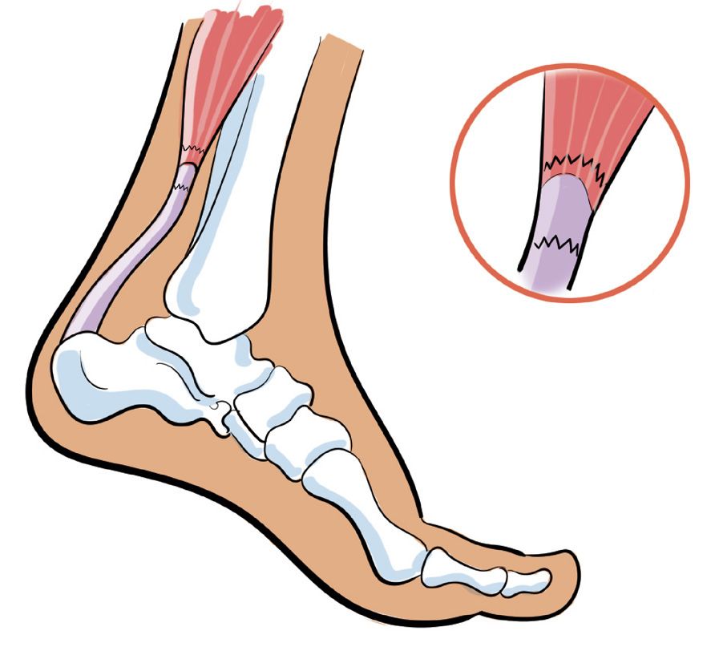
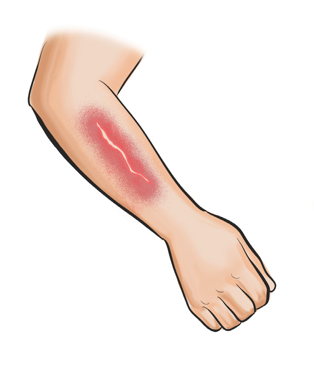
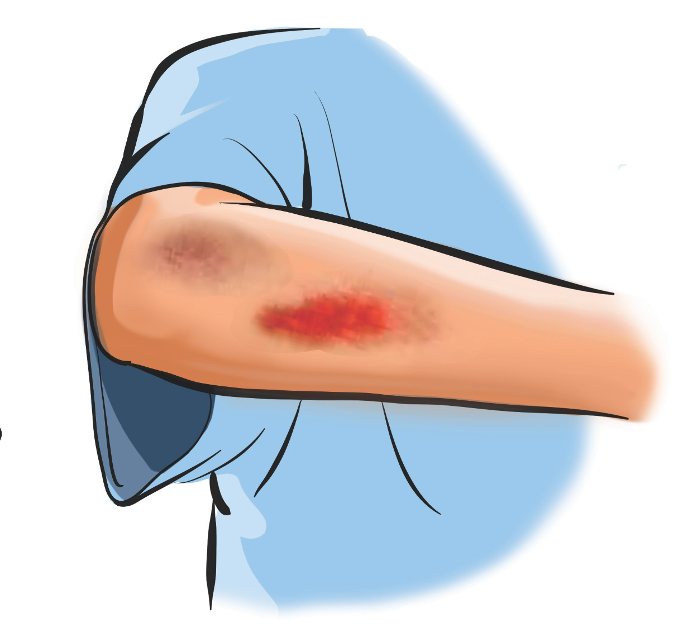

Figure 2.6: Strain
Skin cuts and abrasions
These are injuries in which the top layer of skin is damaged or rubbed away, as shown in Figure 2.7. Skin cut and abrasions are most common in locations that easily contact ground during falling down, such as the knees and elbows. The signs and symptoms of abrasions typically include, pain or discomfort, redness, swelling, bleeding, scraped skin, and scab formation. To handle skin cuts and abrasions, you will need to clean the cut by cotton wool, lift and support the damaged part above the heart level, and then seek for medical aid.


(a) Skin cut (b) Abrations
Figures 2.7: Skin cut and Abrasions injuries